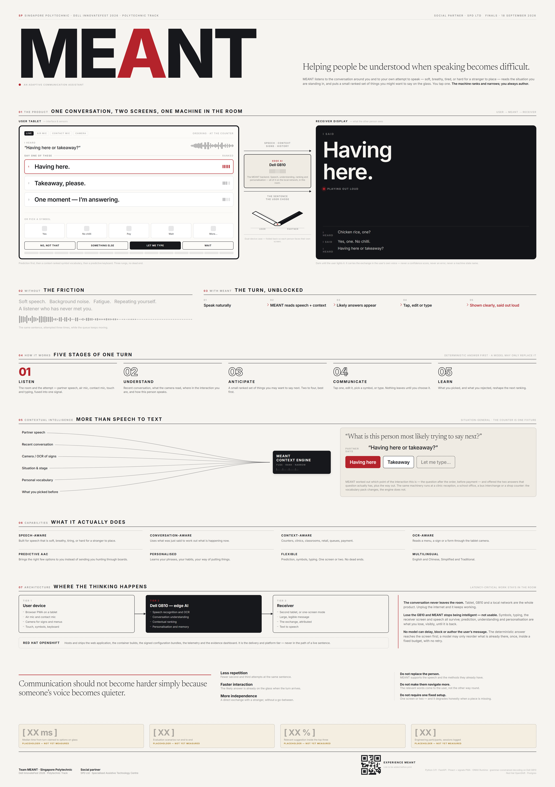

CASE STUDY / DELL INNOVATEFEST 2026
MEANT.
Helping people be understood when speaking becomes difficult.
MEANT is a real-time communication assistant for people who use augmentative and alternative communication (AAC). It helps someone keep up with a fast conversation while giving them the final say.

01 / THE CHALLENGE
Conversations do not wait.
At a counter, in a classroom, or with a stranger, someone using an AAC board or typing may need extra time to answer. The other person can move on or answer for them before they have finished. The goal was to give the AAC user a faster route to their own intended words.
02 / THE IDEA
Prediction, with a clear final say.
MEANT listens to the local conversation and can read relevant visual context. It offers a small set of timely reply suggestions. The user can choose one, use their regular AAC board, or type a different response. Nothing is spoken without an explicit user action.
A partner-facing “Turn Claim” signals that an answer is coming, helping the conversation make room for the user. A caregiver can support without taking over.
03 / HOW IT WORKS
Intelligence that stays in the room.
The tablet handles the interface and sensors. A Dell Pro Max with GB10 hosts speech recognition, context processing, reply preparation, OCR and personalisation locally. That keeps the real-time conversation path available without a cloud connection.
If the GB10 is unavailable, the prediction layer stops, but the device still supports AAC, typing and local speech. Communication does not depend on a single smart feature.
04 / MY CONTRIBUTION
Make the interaction hold up.
Across the team build, I contributed to the AAC boards, the user-facing conversation flow and reliability fixes that kept drafts, microphone behaviour and spoken output predictable. I also helped prepare the live demonstration flow. These are the small details that matter when the user must stay in control.
05 / THE RESULT
A national podium finish.
MEANT was named second runner-up at Dell InnovateFest 2026 and received S$3,000. The project was built as a separate challenge from SignalBridge, with a new partner, user group and technical approach.